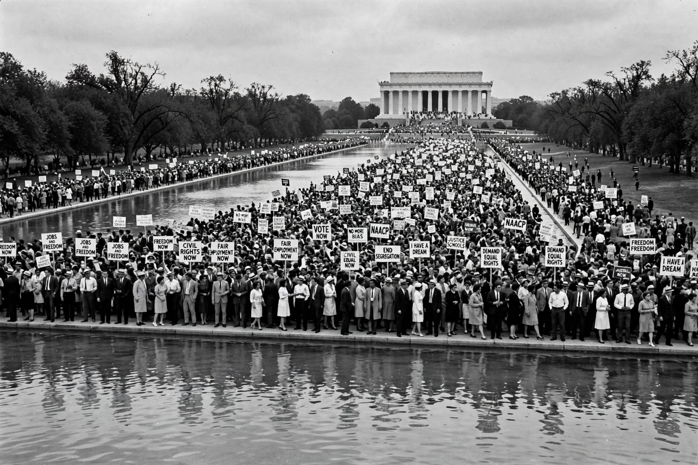

| African Americans | |
|---|---|
 The March on Washington, 28 August 1963 | |
| Total population | About 47 million (including multiracial, 2020 census) |
| Regions | Throughout the United States; largest populations in the South (Texas, Florida, Georgia, New York, California by total) |
| Languages | American English; African-American English; Louisiana Creole; Gullah |
| Religion | Predominantly Protestant (historically Black Protestant churches); also Catholic, Muslim, and others |
African Americans (also known as Black Americans or Afro-Americans) are an ethnic group consisting of Americans with partial or total ancestry from any of the black racial groups of Africa. The history of African Americans begins in the 16th century with the forced migration of West and Central Africans through the transatlantic slave trade to colonies that became the United States, and continues through slavery, emancipation, racial segregation, and the struggle for civil rights.
The first Africans in English North America arrived at Point Comfort, Virginia, in 1619. Over the following two centuries slavery became central to the plantation economies of the South and was embedded in the Constitution; by 1860 nearly four million people were enslaved. The American Civil War and the Emancipation Proclamation (1863) led to the Thirteenth Amendment abolishing slavery in 1865. During Reconstruction African Americans voted and held office across the South, but white supremacist violence and the withdrawal of federal protection brought the Jim Crow era of segregation and disenfranchisement.
The Great Migration of the 20th century moved millions from the rural South to northern and western cities, reshaping American politics and culture. The civil rights movement of the 1950s and 1960s — led by figures such as Martin Luther King Jr. and organizations including the NAACP, founded 1909 — dismantled legal segregation through the Civil Rights Act of 1964 and the Voting Rights Act of 1965. In 2008 Barack Obama was elected the first African American president of the United States.
African Americans constitute the second-largest racial group in the United States, roughly 12–14 percent of the population depending on how multiracial identity is counted. The majority live in the American South, a distribution partly reversed by a late-20th and 21st-century "New Great Migration" of Black Americans to southern metropolitan areas such as Atlanta, Houston, and Charlotte. Major metropolitan concentrations include New York City, Chicago, Atlanta, Washington, D.C., and Detroit.
African American culture has been foundational to American music — spirituals, blues, jazz, gospel, rhythm and blues, rock and roll, soul, funk, hip hop — as well as to American literature, cuisine, and religious life. The historically Black Protestant churches remain central institutions, and historically Black colleges and universities (HBCUs) such as Howard and Morehouse have educated generations of professionals and leaders. Family, oral tradition, and foodways — including "soul food" — reflect the blending of African, European, and Native American influences under conditions of slavery and freedom.
Despite legal equality, African Americans experience persistent disparities in wealth, income, incarceration, health outcomes, and exposure to environmental hazards, disparities widely attributed by scholars to the legacies of slavery, segregation, and discriminatory policies such as redlining. Debates over affirmative action, police reform, voting rules, and reparations remain central to American politics. The Black Lives Matter movement, founded in 2013, brought renewed national attention to police violence and systemic racism.